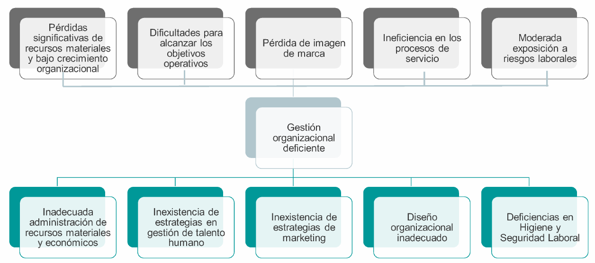
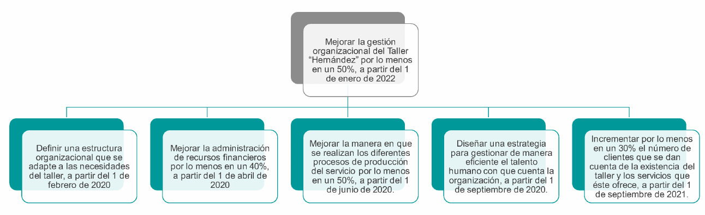

Para poder contrarrestar los problemas se procedió establecer objetivos que disminuyeran el impacto de las causas de la situación problémica dentro del taller
Árbol de Problemas

Árbol de Objetivos

Objetivos y Concecuencias Positivas
Objetivos
Mejorar la gestión organizacional del Taller “Hernández” por lo menos en un
50%, a partir del 1 de enero de 2022.
Definir una estructura organizacional que se adapte a las necesidades del
taller, a partir del 1 de febrero de 2020.
Definir mediante un esquema la estructura de la organización, a partir del 1 de
febrero de 2020.
Describir de manera escrita los requerimientos que se requieren para cada
cargo, a partir del 1 de febrero de 2020.
Plantear los objetivos a corto y a largo plazo que el taller desea cumplir, a
partir del 1 de febrero de 2020.
Definir una misión y una visión para el taller, a partir del 1 de febrero de 2020.
Formalizar el negocio mediante los trámites necesarios con las entidades
correspondientes, a partir del 1 de septiembre de 2021.
Mejorar la administración de recursos financieros por lo menos en un 40%, a
partir del 1 de abril de 2020.
Mejorar la gestión de los beneficios y utilidades que genere el negocio, a partir
del 1 de mayo de 2020.
Registrar de manera formal el 100% de las operaciones y transacciones que
se realicen en el taller, a partir del 1 de mayo de 2020.
Digitalizar al menos un 90% de las operaciones y transacciones que se
realizan en el taller, a partir del 1 de mayo de 2020.
Hacer una contabilización del dinero recaudado al final de cada mes y
registrarlo, a partir del 1 de agosto de 2020.
Mejorar la manera en que se realizan los diferentes procesos de producción
del servicio por lo menos en un 50%, a partir del 1 de junio de 2020.
Eliminar las inconsistencias en los procesos por lo menos en un 50%, a partir
del 1 de mayo de 2020.
Definir de manera clara y precisa el proceso para la adquisición de
repuestos, a partir del 1 de abril de 2020.
Concecuencias positivas
Aumento de la rentabilidad del taller Hernández.
Mejoramiento significativo en la forma de operar del taller
Mayor facilidad para los trabajadores de saber sus funciones y
responsabilidades que deben cumplir.
Mayor detalle de información que se requiere en los cargos para el ingreso
de nuevo personal.
Mayor proyección y visualización de las metas que el taller quiere lograr
tanto a corto como a largo plazo.
Mayor conocimiento y divulgación de la razón de ser del taller entre los
trabajadores y personal administrativo.
Mayor accesibilidad a participar en eventos por parte del estado para
promocionar las pequeñas y medianas empresas, asimismo se logra una mayor
credibilidad y confianza entre los clientes.
Mayores niveles de utilidades operativas con respecto a las gestiones y
operaciones del taller, asimismo se obtiene un mayor control sobre el estado de la
organización.
Aumento de la rentabilidad del negocio, así como también una mayor
capacidad de realizar inversiones en la mejora del taller.
Un mayor control sobre las operaciones y transacciones que realiza el
taller, además se generan registros históricos para saber realmente las ganancias
del negocio.
Mayor eficiencia y rapidez con que se efectúan los procesos y
procedimientos dentro del taller, aumentando a su misma vez la calidad del
servicio al cliente.
Capacidad para tener un control y seguimiento de los ingresos y egresos
realizados en el mes, obteniendo información base para hacer presupuestos
elaborados de una manera más eficiente y acertada.
Aumento significativo de la eficiencia con que se realizan los diferentes
procesos de servicio dentro del taller, asimismo se logra un aumento en la
productividad global de los trabajadores.
Disminución considerable de los retrasos que se ocasionen debido a las
inconsistencias y desperfectos que se presenten en los procesos.
Mayor facilidad para obtener los repuestos que se necesiten en cualquier
orden de trabajo que lo requiera, de manera predeterminada.
Alternativas de Solución y Concecuencias Negativas
Alternativas de Solución
Diseñar un sistema de gestión organizacional efectivo para el Taller
Hernández.
Contratar a un ingeniero industrial o de sistemas para elaborar las debidas
gestiones administrativas y organizacionales con un salario de C$10,000.00
mensual.
Definir y diseñar un organigrama funcional con base en los cargos y los
recursos humanos que posee el taller.
Diseñar fichas ocupacionales para todos los cargos existentes dentro del
taller.
Definir los objetivos a corto y a largo plazo del taller y estructurarlos en
forma secuencial y escrita para definir la misión y visión respectivamente.
Definir los objetivos a corto y a largo plazo del taller y estructurarlos
en forma secuencial y escrita para definir la misión y visión respectivamente.
Realizar una inscripción en las entidades gubernamentales a un costo
C$1,000.00.
Cumplir con los requisitos mínimos establecidos por la ley para inscribir de
manera oficial el taller con un total de C$650.00.
Contratar a 2 ingeniero de sistemas o computación para elaborar un
sistema de manufactura que tome en cuenta toda la información generada por los
procesos del taller que tendrá un costo de C$40,000.00 y una duración de 6
meses.
Establecer una meta estándar a lograr en la obtención de beneficios en
concepto de los servicios prestados al menos en C$70,000.00 trimestralmente.
Establecer una meta estándar a lograr en la obtención de
beneficios en concepto de los servicios prestados al menos en C$70,000.00
trimestralmente.
Contratar a un ingeniero industrial o de sistemas para elaborar las
debidas gestiones administrativas y organizacionales con un salario de
C$10,000.00 mensual.
Diseñar plantillas en Excel para registrar los datos implicados en las
operaciones y transacciones del taller.
Efectuar la compra de un ordenador que se ajuste a las necesidades
básicas del taller con un costo aproximado de C$ 12,000.00.
Diseñar plantillas en Excel para registrar los datos implicados en
las operaciones y transacciones del taller.
Contratar a un analista de procesos con un salario mensual de
C$8,000.00 con el fin de garantizar la realización de los diferentes procesos
ofrecidos.
Realizar reuniones trimestrales en las que se realicen lluvias de ideas
sobre cómo mejorar los procesos que realizan dentro del taller, con un costo
C$900.00.
Contratar a un analista de procesos con un salario mensual de
C$8,000.00 con el fin de garantizar la realización de los diferentes procesos
ofrecidos.
Contratar a un auxiliar de bodega con un salario C$5,000.00, que se
encargue del control de inventario y compras de repuesto.
Delegar a un miembro del taller la tarea de compra de repuesto,
añadiendo a su pago C$1,000.00, y otro miembro el control de inventario,
añadiendo a su pago C$1,500.00
Concecuencias Negativas
Complejidad del sistema, además de requerir supervisión y seguimiento
continuo, esto conllevaría a una gran inversión.
Contratar personal ingenieril e incurrir en gastos aproximados de C$10,000 mensuales en pago de
planilla.
Resistencia por ambas partes (socios y empleados) de tener
establecido un organigrama en base a los cargos y recursos humanos que posee
la empresa. Socios debido a que incurriría en gastos de efectivo y trabajadores por
inconformidad en cargos que le sean asignados.
Generar gastos aproximados de C$300 en papelería para el diseño de
fichas ocupacionales.
Estructuración secuencial de objetivos no
adecuada para lograr definir la misión y visión del Taller.
Incurrir en gastos de C$1,000 aproximadamente con el fin de realizar el
proceso de inscripción a entidades gubernamentales.
Generar costos de aproximadamente C$500.00 y no lograr satisfacer
los requisitos establecidos por la ley, lo que conllevaría a gastos extras no
calculables debido a sanciones no esperadas.
Se tendrá que invertir un monto significativo reduciendo el
capital en aproximadamente C$250,500.00 para la elaboración de un sistema de
manufactura
No conseguir un alcance significativo en las
metas propuestas para obtener mayores ganancias por servicios prestados.
Administración de los datos registrados en
Excel inadecuado debido al incorrecto manejo de la herramienta (Excel).
Incurrir en gastos aproximadamente de C$ 12,000.00. en equipo
electrónico (computadora).
Altos niveles de salario por personal calificado en el Taller
Hernández.
Falta de interés por parte de socios al comunicar posibles mejoras que
se puedan realizar en el giro de negocio en la institución.
Realizar un desembolso de C$5,000.00 para contratar personal que
gestione el control de inventario y compras de repuesto.
Se amerita el gasto de C$800.00 y C$1,000.00 para pago de personal
encargado de compra de repuestos y control de inventario respectivamente.